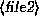
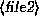
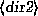
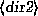
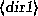
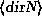
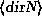
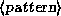

Next: 3.5 Exploring the File
Up: 3 Linux Tutorial
Previous: 3.3.8 Getting online help
This section introduces some of the most useful basic commands on a UNIX
system, including those covered in the last section.
Note that options usually begin with a ``-'', and in most cases multiple
one-letter options may be combined using a single ``-''. For example,
instead of using the command ls -l -F, it is adequate to use
ls -lF.
Instead of listing all of the options available for each of these commands,
we'll only talk about those which are useful or important at this time.
In fact, most of these commands have a large number of options (most of which
you'll never use). You can use man to see the manual pages for each
command, which list all of the available options.
Also note that many of these commands take a list of files or directories
as arguments, denoted by `` ...
... ''. For
example, the cp command takes as arguments a list of files to copy,
followed by the destination file or directory. When copying more than one
file, the destination must be a directory.
''. For
example, the cp command takes as arguments a list of files to copy,
followed by the destination file or directory. When copying more than one
file, the destination must be a directory.
- cd
-
Change the current working directory.
Syntax: cd 
 is the directory to change to. (``.'' refers to the
current directory, ``..'' the parent directory.)
is the directory to change to. (``.'' refers to the
current directory, ``..'' the parent directory.)
Example: cd ../foo sets the current directory to ../foo.
- ls
-
Displays information about the named files and directories.
Syntax: ls   ...
 ...
Where  through
through  are the filenames or directories
to list.
Options: There are more options than you want to think about. The most
commonly used
are -F (used to display some information about the type of the file),
and -l (gives a ``long'' listing including file size, owner,
permissions, and so on. This will be covered in detail later.)
are the filenames or directories
to list.
Options: There are more options than you want to think about. The most
commonly used
are -F (used to display some information about the type of the file),
and -l (gives a ``long'' listing including file size, owner,
permissions, and so on. This will be covered in detail later.)
Example: ls -lF /home/larry will display the contents of the directory
/home/larry.
- cp
-
Copies file(s) to another file or directory.
Syntax: cp 
 ...
...

Where  through
through  are the files to copy, and
are the files to copy, and
 is the destination file or directory.
is the destination file or directory.
Example: cp ../frog joe copies the file ../frog to the file
or directory joe.
- mv
-
Moves file(s) to another file or directory. This command does the
equivalent of a copy followed by the deletion of the original. This
can be used to rename files, as in the MS-DOS command RENAME.
Syntax: mv 
 ...
...

Where  through
through  are the files to move, and
is the destination file or directory.
are the files to move, and
is the destination file or directory.
Example: mv ../frog joe moves the file ../frog to the file
or directory joe.
- rm
-
Deletes files. Note that when files are deleted under UNIX,
they are unrecoverable (unlike MS-DOS, where you can usually ``undelete''
the file).
Syntax: rm 
 ...
...
Where  through
through  are the filenames to delete.
are the filenames to delete.
Options: -i will prompt for confirmation before deleting the file.
Example: rm -i /home/larry/joe /home/larry/frog deletes the files
joe and frog in /home/larry.
- mkdir
-
Creates new directories.
Syntax: mkdir   ...
 ...
Where  through
through  are the directories to create.
are the directories to create.
Example: mkdir /home/larry/test creates the directory test
under /home/larry.
- rmdir
-
This command deletes empty directories. When using rmdir, your
current working directory must not be within the directory to be deleted.
Syntax: rmdir   ...
...
Where  through
through  are the directories to delete.
are the directories to delete.
Example: rmdir /home/larry/papers deletes the directory
/home/larry/papers, if it is empty.
- man
-
Displays the manual page for the given command or resource (that is,
any system utility which isn't a command, such as a library function.)
Syntax: man

Where is the name of the command or resource to get help
on.
Example: man ls gives help on the ls command.
- more
-
Displays the contents of the named files, one screenful at a time.
Syntax: more 
 ...
...
Where  through
through  are the files to display.
are the files to display.
Example: more papers/history-final displays the file
papers/history-final.
- cat
-
Officially used to concatenate files, cat is also used to display
the entire contents of a file at once.
Syntax: cat 
 ...
...
Where  through
through  are the files to display.
are the files to display.
Example: cat letters/from-mdw displays the file
letters/from-mdw.
- echo
-
Simply echoes the given arguments.
Syntax: echo ...
Where  through
through  are the arguments to echo.
are the arguments to echo.
Example: echo "Hello world" displays the string ``Hello world''.
- grep
-
Display all of the lines in the named file(s) matching the given pattern.
Syntax: grep  
 ...
...

Where  is a regular expression pattern, and
is a regular expression pattern, and
 through
through  are the files to search.
are the files to search.
Example: grep loomer /etc/hosts will display all lines in the file
/etc/hosts which contain the pattern ``loomer''.
Next: 3.5 Exploring the File
Up: 3 Linux Tutorial
Previous: 3.3.8 Getting online help
Matt Welsh
mdw@sunsite.unc.edu